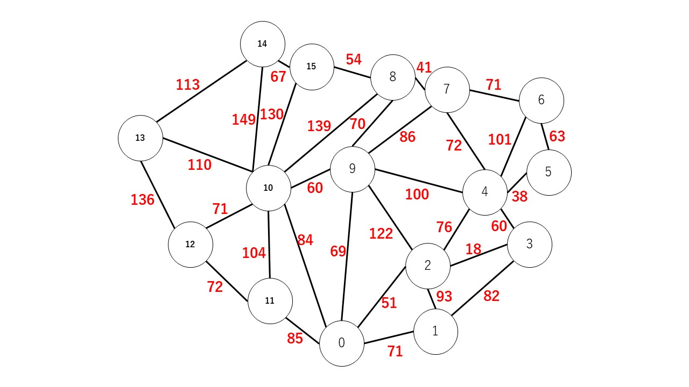
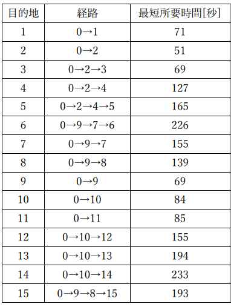

【使用歴】
C言語は大学の講義で半年間、基本的な内容を学んだ。
またC++は、競技プログラミング(AtCoder)で用いている。
↓2024年4月現在は茶色コーダーで、緑コーダーまではあと一歩である。
AtCoderのアカウント
【使用例】
ディズニーランドにおけるアトラクションまでの最短経路を、ダイクストラ法を用いて解いてみた。
ディズニーランドの地図は、誰でも公式サイトで無料ダウンロードすることができる。
→こちら
この地図をもとにいくつかのアトラクションを抜粋し、それぞれのエントランスからの最短時間となる経路を求めた。
抜粋したアトラクション(ノード)と各移動の所要時間(秒)が以下である。

実際にダイクストラ法を用いて計算した結果は、下のようになった。

また発展的な内容として、スタートとゴールにダイクストラ法を適用することで、中継地を指定した場合の最短経路を求めたり、
全アトラクションを巡る一種のTSPを局所探索法、焼きなまし法で解いたりもした。